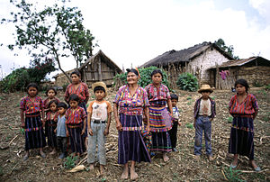

Kanada
Erdvė, gamta ir daugiakultūriškumas, sukuriantys unikalią tapatybę.

Erdvė, gamta ir daugiakultūriškumas, sukuriantys unikalią tapatybę.
Kanadoje klevų sirupas yra ne šiaip saldiklis – tai nacionalinė vertybė! Pavasarį, kai prasideda sulos rinkimas, visoje šalyje žmonės plūsta į „sugar shacks“ – kaimiškas trobeles miškuose, kur galima stebėti, kaip verdamas tikras klevų sirupas. Ir, žinoma, ragauti jį su blynais, bekonu ar tiesiog ant sniego sušaldytą kaip saldainį.
Kanadiečiai dievina gamtą – nesvarbu, ar tai būtų žygiai per kalnus, baidarės ežeruose ar stovyklavimas viduryje niekur. Net didmiesčiuose žmonės nuolat ieško būdų, kaip praleisti laiką lauke. Žiemą – slidinėjimas ir čiuožinėjimas, vasarą – iškylos ir kelionės su kemperiais. Kuo daugiau laiko gamtoje, tuo geriau!

Jei Kanadoje pasakysi, kad nemėgsti ledo ritulio, gali sulaukti labai nustebusių žvilgsnių. Šis sportas čia toks svarbus, kad net kūdikiai gimsta jau būdami „hockey fans“. Kai vyksta svarbios varžybos, visa šalis sustoja, o vaikai jau nuo mažų dienų mokosi čiuožti ir lazda valdyti ritulį. Kanadiečiai tikrai tiki, kad ledo ritulys yra jų kraujyje!
Kanadoje įprasta kreiptis į žmones vardu, net jei tai tavo viršininkas, profesorius ar gydytojas. Čia nėra būtina naudoti oficialių titulų ar pavardžių, nes bendravimas laikomas draugiškesniu ir mažiau hierarchiniu. Net politiniai lyderiai kartais vadinami tiesiog vardais – Kanadoje visi esame lygūs!
Kanadiečiai mėgsta prieš verslo ar darbo susitikimus padaryti nedidelį „apšilimą“ – trumpai pasikalbėti apie orą, savaitgalio planus ar net naujausią ledo ritulio rungtynių rezultatą. Tai nėra tiesiog mandagumas – tai būdas sukurti draugiškesnę atmosferą ir sumažinti oficialumą. Jei esi Kanadoje ir nori pradėti pokalbį, tiesiog pasakyk: „Wow, it’s cold today!“ – ir viskas klostysis sklandžiai!
Didysis penktadienis švenčiamas prieš Velykas, krikščionių maldos ir rimties diena.
Viktorijos diena švenčiama gegužės paskutinį pirmadienį prieš 25 d., pagerbiama karalienė Viktorija, fejerverkai.
Kanados diena švenčiama liepos 1 d., švenčiama šalies įkūrimas su fejerverkais ir renginiais.
Darbo diena, švenčiama rugsėjo pirmąjį pirmadienį, poilsio diena su iškylomis.
Padėkos diena, švenčiama spalio antrąjį pirmadienį, dėkingumo šventė su šeimos vakariene.
Atminimo diena, švenčiama lapkričio 11 d., pagerbiami žuvę kariai tylos minute ir aguonų simbolika.

Dovanų diena, švenčiama gruodžio 26 d., išpardavimai, dovanojimo tradicija.
Štai keletas dažnai naudojamų frazių Kanadoje! Šitai tau padės nepasimesti pokalbių metu. Tačiau šiomis frazėmis reikia naudotis atsargiai, nes, jei netyčia persistengsi, gali pasirodyti nemandagiai.
Reikšmė: bičiulis, draugužis, draugas.
Panaudojimas: „Hey buddy, can you pass me that?“
Jei tai sakote su draugišku tonu, tai reiškia „draugas“, bet jei su šiokia tokia ironija, gali reikšti nepasitenkinimą ar net įspėjimą.
Patarimas! Nors „buddy“ yra draugiškas žodis, ne visiems jis patinka – ypač jei sakote jį nepažįstamam žmogui griežtu tonu!
Reikšmė: cigaretės, cigarai, parūkyti.
Panaudojimas: „I’m heading out for a dart.“
Jei Kanadoje kas nors paklaus „Got any darts?“, jie tikrai nekalba apie smiginį!
Patarimas! Tai neformalus žargonas, todėl geriausia jį vartoti tik tarp pažįstamų, kurie supranta šį terminą.
Reikšmė: žmogus, kuris labai stengiasi.
Panaudojimas: „She did the extra work, she’s a keener.“
Jei kažkas jus vadina „keener“, tai gali būti ir komplimentas, ir draugiška pašaipa, priklausomai nuo konteksto!
Patarimas! Šis žodis gali būti vartojamas pašaipiai, ypač jei kas nors atrodo per daug entuziastingas.
Reikšmė: daugiaaukštė stovėjimo aikštelė.
Panaudojimas: „Let’s meet at the parkade near the mall.“
Šis terminas dažniausiai vartojamas Vakarų Kanadoje, o rytinėje dalyje žmonės dažniau sako „parking garage“.
Patarimas! Jei esate Kanadoje ir ieškote vietos pastatyti automobilį, klauskit apie „parkade“, ne „parking garage“ – vietiniai jus geriau supras!
Reikšmė: vieno dolerio moneta ir dviejų.
Panaudojimas: „I need a loonie for the soda.“
Nepriklausomai nuo to, kiek oficialiai sakytumėte „one-dollar coin“, Kanadoje vis tiek visi sakys „loonie“!
Patarimas! Šie terminai taip paplitę, kad net oficialiuose kontekstuose žmonės sako „loonie“ ir „toonie“ vietoj „one-dollar coin“ ir „two-dollar coin“!
Reikšmė: megzta žieminė kepurė.
Panaudojimas: „It’s freezing, don’t forget your toque!“
Jei Kanadoje sakysite „beanie“, vietiniai supras, bet jei norite skambėti kaip tikras kanadietis, sakykite „toque“.
Patarimas! „Toque“ tariama kaip „tūk“, o ne „tok“ ar „toak“!
Reikšmė: džemperis su gobtuvu.
Panaudojimas: „It’s chilly, I’m gonna put on my bunny hug.“
Jei ne Saskačevane, žmonės gali nesuprasti šios frazės. Kitose Kanados vietose sakykite „hoodie“!
Patarimas! Jei sakote „bunny hug“ kitose provincijose, būkite pasiruošę paaiškinti, ką tai reiškia!
Reikšmė: gazuotas gėrimas (pvz., Coca-cola).
Panaudojimas: „I’ll have a pop with my burger.“
Vakarų Kanadoje žmonės dažniausiai sako „pop“, o Rytų Kanadoje – „soda“.
Patarimas! Jei Kanadoje paprašysite „soda“, žmonės supras, bet „pop“ yra populiaresnis terminas!
Reikšmė: 24 butelių alaus pakuotė.
Panaudojimas: „Grab a two-four for the long weekend!“
Tai itin populiarus terminas per „May Two-Four“ – Kanados Viktorijos dienos savaitgalį.
Patarimas! Tai neformalus žodis, todėl jo nenaudokite oficialiuose kontekstuose.
Reikšmė: kilometrai (kilometres).
Panaudojimas: „We’ve got about 10 clicks to go.“
Šis žodis dažnesnis Kanadoje nei JAV!
Patarimas! Šį terminą dažniausiai naudoja kariškiai ir tolimų kelionių vairuotojai.
Reikšmė: mažos parduotuvėlės.
Panaudojimas: „I’m heading to the dep for some milk.“
Už Kvebeko ribų sakykite „corner store“ arba „convenience store“.
Patarimas! Jei esate ne Kvebeke, žmonės gali nesuprasti, ką turite omenyje!
Reikšmė: sumaištis, ginčas, chaotiška situacija.
Panaudojimas: „There was a kerfuffle at the game.“
Tai neformalus britiškos kilmės žodis, dažniausiai vartojamas linksmai arba švelniai.
Patarimas! Šis žodis dažnai vartojamas humoristiškai, apibūdinant mažas dramas.

Štai keletas dalykų, kurių niekada nederėtumėte daryti, jei norite susilieti ir išvengti nepatogių situacijų. Vadovaukitės šiais patarimais, kad padarytumėte puikų įspūdį!
| Negalima: | Kodėl? | Ką daryti vietoj to: | |
|---|---|---|---|
| Girtis | Kanadiečiai vertina kuklumą ir pernelyg didelis pasigyrimas gali būti laikomas nemandagiu. | Būk kuklus ir leisk savo darbams kalbėti už tave. | |
| Lyginti kanadiečių su amerikiečiais | Kanadiečiai didžiuojasi savo kultūra ir nemėgsta būti lyginami su JAV. | Gerbk Kanados unikalumą ir nekalbėk apie ją kaip apie „šiaurinę Ameriką“. |  |
| Rodyti stiprių emocijų viešai | Kanadiečiai dažnai vengia dramatiškų emocijų viešose vietose. | Būk mandagus ir išlaikyk ramų toną, net jei esi susijaudinęs. | |
| Vartoti termino „Indėnai“ vietoj „Indigenous“ | „Indigenous“ (pirmieji tautų gyventojai) yra tinkamas ir gerbtinas terminas. | Naudok „Indigenous“ arba konkrečios tautos pavadinimą, jei žinai. |  |
| Nepripažinti savo klaidų | Kanadiečiai vertina atsakomybę ir nuoširdumą. | Jei suklydai, tiesiog atsiprašyk ir pabandyk taisyti klaidą. | |
| Kelti kontroversiškų temų | Kanadiečiai dažnai vengia konfrontacijos ir nemėgsta ginčytis dėl jautrių temų. | Jei nesate tikras, ar tema tinkama, geriau jos venkite. | |
| Juokauti apie politiką | Nors humoras svarbus, politinės temos gali būti jautrios ir ne visada tinkamos juokams. | Būk atsargus su politiniais juokeliais ir įsitikink, kad jie neįžeis kitų. |

Dainininkas, kurio karjera prasidėjo nuo „YouTube“ vaizdo įrašų ir išaugo į pasaulinį popmuzikos fenomeną.
„No one can stop me.“

Kanadiečių aktorius, žinomas dėl savo humoro jausmo ir vaidmens filme „Deadpool“.
„When you have expectations, you are setting yourself up for disappointments.“
Garsi dainininkė su stipriu balsu, žinoma dėl dainų, tokių kaip „My Heart Will Go On“ iš filmo „Titanikas“.
„I don't know if the camera likes me, but I do like the camera.“